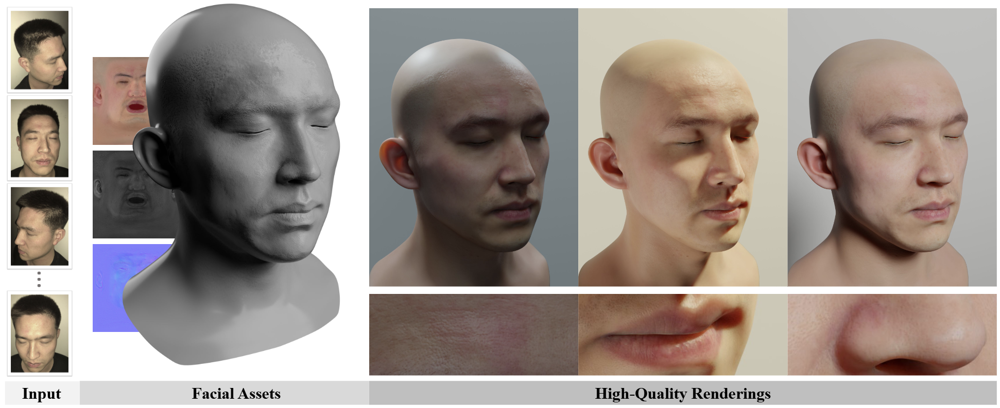

Facial Appearance Capture at Home with Patch-Level Reflectance Prior
SIGGRAPH 2025 (Journal Track)


Overview

We propose a novel method for low-cost high-quality facial appearance capture. Given a single co-located smartphone and flashlight sequence captured in a dim room as the input, our method can reconstruct high-quality facial assets, which can be exported to common graphics engines like Blender for photo-realistic rendering. As shown in the figure above, our method can faithfully reconstruct detail patterns on different facial regions like the forehead, lip, and nose.
Key Idea
Why low-cost facial appearance capture method like CoRA produces lower-quality results than studio-based approaches? Our answer is the lack of the observation:
-
The image quality of the smartphone camera is significantly inferior to that of DSLR cameras used by the studio-based method.
-
Without polarization filters for explicit diffuse-specular separation, the inherent entanglement of these two components leads to degraded estimation of high-frequency facial details in the normal and specular albedo maps.
Thus, we propose to introduce prior on facial reflectance maps to close the quality gap between low-cost and high-budget methods. Specifically, our method is a two-stage method:
-
Stage I build the prior: We train a diffusion model on the high-quality facial reflectance patches cropped from Light Stage scans.
-
Stage II use the prior: We propose a novel patch-level diffusion posterior sampling technique to steer our patch-level diffusion prior to produce a full-resolution map that best matches the captured images. Namely, we solve the reflectance maps within the distribution modeled by our high-quality diffusion prior.
See our video for more illustrations and results:
Citation
@inproceedings{han2025dora,
author = {Han, Yuxuan and Lyu, Junfeng and Sheng, Kuan and Que, Minghao and Zhang, Qixuan and Xu, Lan, and Xu, Feng},
title = {Facial Appearance Capture at Home with Patch-Level Reflectance Prior},
booktitle = {SIGGRAPH},
year={2025}
}